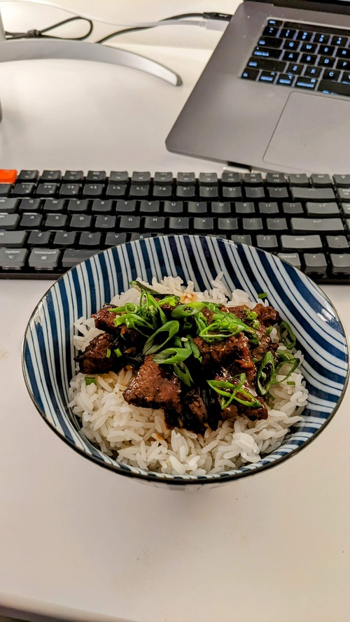

Mongolian Beef

Serves: 3
Prep time: 1hr
Author: Matthieu Court
Ingredients
400-500g - Flank or Skirt Streak
3-4 Tbsp - Flour
Handful - (Thai) Basil
3 - small Red Chilis
1/2 cup - Soy Sauce
30g - Brown Sugar
30g - Apple Cider Vinegar
1 bunch - Green Onion
4 cloves - Garlic (finely chopped)
Back to Home